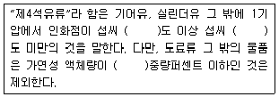
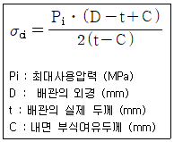
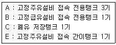
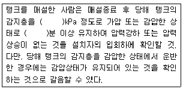

위험물기능장 (2015-07-19 기출문제)
1과목: 임의구분
1. 위험물안전관리법령에 따른 기계에 의하여 하역하는 구조로 된 운반용기에 대한 수납기준에 의하면 액체위험물을 수납하는 경우에는 55℃의 온도에서의 증기압이 몇 kPa이하가 되도록 수납하여야 하는가?
- 100
- 101.3
- 130
- 150
(정답률: 69%)

2. 인화점이 0℃ 미만이고 자연발화의 위험성이 매우 높은 것은?
- C4H9Li
- P2S5
- KBrO3
- C6H5CH3
(정답률: 74%)
3. 옥내저장탱크의 펌프설비가 탱크전용실이 있는 건축물에 설치되어 있다. 펌프설비가 탱크전용실외의 장소에 설치되어 있는 경우, 위험물안전관리법령상 펌프실 지붕의 기준에 대한 설명으로 옳은 것은?
- 폭발력이 위로 방출될 정도의 가벼운 불연재료로만 하여야 한다.
- 불연재료로만 하여야 한다.
- 내화구조 또는 불연재료로 할 수 있다.
- 내화구조로만 하여야 한다.
(정답률: 73%)
4. 다음 중 비중이 가장 작은 것은?
- 염소산칼륨
- 염소산나트륨
- 과염소산나트륨
- 과염소산암모늄
(정답률: 50%)
5. 위험물안전관리법령상 제5류 위험물에 해당하는 것은?
- 니트로벤젠
- 히드라진
- 염산히드라진
- 글리세린
(정답률: 66%)
6. 각 물질의 저장 및 취급 시 주의사항에 대한 설명으로 옳지 않은 것은?
- H2O2 : 완전 밀폐ㆍ밀봉된 상태로 보관한다.
- K2O2 : 물과의 접촉을 피한다.
- NaClO3 : 철제용기에 보관하지 않는다.
- CaC2 : 습기를 피하고 불활성가스를 봉인하여 저장한다.
(정답률: 85%)
7. 다음 중 BTX에 해당하는 물질로서 가장 인화점이 낮은 것은?
- 이황화탄소
- 산화프로필렌
- 벤젠
- 자일렌
(정답률: 80%)
8. 산소 32g과 질소 56g을 20℃에서 15L의 용기에 혼합하였을 때 이 혼합기체의 압력은 몇 atm인가? (단, 기체상수는 0.082atmㆍL/몰ㆍK이며 이상기체로 가정한다.)
- 1.4
- 2.4
- 3.8
- 4.8
(정답률: 55%)
9. 위험물안전관리법령에 따른 제4석유류의 정의에 대해 다음 ()에 알맞은 수치를 나열한 것은?

- 200, 250, 40
- 200, 250, 60
- 200, 300, 40
- 250, 300, 60
(정답률: 67%)
10. 다음의 위험물을 각각의 옥내저장소에서 저장 또는 취급할 때 위험물안전관리법령상 안전거리의 기준이 나머지 셋과 다르게 적용되는 것은?
- 질산 1000kg
- 아닐린 50000L
- 기어유 100000L
- 아마인유 100000L
(정답률: 55%)
11. 위험물 운반 시 제4류 위험물과 혼재할 수 있는 위험물의 유별을 모두 나타낸 것은? (단, 혼재위험물은 지정수량이 1/10을 각각 초과 한다.)
- 제2류 위험물
- 제2류 위험물, 제3류 위험물
- 제2류 위험물, 제3류 위험물, 제5류 위험물
- 제2류 위험물, 제3류 위험물, 제5류 위험물, 제6류 위험물
(정답률: 88%)
12. 포소화약제의 일반적인 물성에 관한 설명 중 틀린 것은?
- 발포배율이 커지면 환원시간(drainae time)은 짧아진다.
- 환원시간이 길면 내열성이 우수하다.
- 유동성이 좋으면 내열성도 우수하다.
- 발포배율이 커지면 유동성이 좋아진다.
(정답률: 64%)
13. 다음 품명 중 위험물안전관리법령상 지정수량이 나머지 셋과 다른 하나는?
- 히드록실아민
- 니트로화합물
- 아조화합물
- 히드라진유도체
(정답률: 71%)
14. 지하저장탱크의 주위에 액체위험물의 누설을 검사하기 위한 관을 설치하는 경우 그 기준으로 옳지 않은 것은?
- 관은 탱크전용실의 바닥에 닿지 않게 할 것
- 이중관으로 할 것
- 관의 밑부분으로부터 탱크의 중심 높이까지의 부분에는 소공이 뚫려 있을 것
- 상부는 물이 침투하지 아니하는 구조로 하고, 뚜껑은 검사시에 쉽게 열 수 있도록 할 것
(정답률: 81%)
15. 위험물안전관리법령상의 용어에 대한 설명으로 옳지 않은 것은?
- “위험물”이라 함은 인화성 또는 발화성 등의 성질을 가지는 것으로서 대통령령이 정하는 물품을 말한다.
- “제조소”라 함은 7일 동안 지정수량 이상의 위험물을 제조하기 위한 시설을 뜻한다.
- “지정수량”이라 함은 취험물의 종류별로 위험성을 고려하여 대통령령이 정하는 수량으로서 제조소등의 설치허가 등에 있어서 최저의 기준이 되는 수량을 말한다.
- “제조소등”이라 함은 제조소ㆍ저장소 및 취급소를 말한다.
(정답률: 83%)
16. 위험물안전관리법령에 따른 제2석유류가 아닌 것은?
- 아크릴산
- 포름산
- 경유
- 피리딘
(정답률: 75%)
17. 산화성액체 위험물에 대한 설명 중 틀린 것은?
- 과산화수소는 물과 접촉하면 심하게 발열하고 증기는 유독하다.
- 질산은 불연성이지만 강한 산화력을 가지고 있는 강산화성 물질이다.
- 질산은 물과 접촉하면 발열하므로 주의하여야 한다.
- 과염소산은 강산이고 불안정하여 열에 의해 분해가 용이하다.
(정답률: 71%)
18. 디에틸에테르 공기 중 위험도(H) 값에 가장 가까운 것은?
- 2.7
- 8.6
- 15.2
- 24.3
(정답률: 61%)
19. 암적색의 분말인 비금속 물질로 비중이 약 2,2, 발화점이 약 260℃이고 물에 불용성인 위험물은?
- 적린
- 황린
- 삼황화린
- 유황
(정답률: 79%)
20. 위험물안전관리법령상 제2류 위험물인 철분에 적응성이 있는 소화설비는?
- 옥외소화전설비
- 포소화설비
- 이산화탄소소화설비
- 탄산수소염류 분말소화설비
(정답률: 81%)
2과목: 임의구분
21. 메탄 2L를 완전 연소 하는데 필요한 공기 요구량은 약 몇 L인가? (단, 표준상태를 기준으로 하고 공기 중의 산소는 21vl%이다.)
- 2.42
- 4
- 19.⑤
- 22.4
(정답률: 62%)
22. 위험물의 지정수량 연결이 틀린 것은?
- 오황하린-100kg
- 알루미늄분-500kg
- 스테렌 모노머-2000L
- 포름산-2000L
(정답률: 73%)
23. 이산화탄소 소화설비의 장ㆍ단점에 대한 설명으로 틀린 것은?
- 전역방출방식의 경우 심부화재에도 효과가 있다.
- 밀폐공간에서 질식과 같은 인명 피해를 입을수도 있다.
- 전기절연성이 높아 전기화재에도 적합하다.
- 배관 및 관 부속이 저압이므로 시공이 간편하다.
(정답률: 85%)
24. 질산칼륨 101kg이 열분해 될 때, 발생되는 산소는 표준상태에서 몇 m3인가? (단, 원자량은 K : 39, O : 16, N : 14이다.)
- 5.6
- 11.2
- 22.4
- 44.8
(정답률: 54%)
25. 다음은 이송취급소의 배관과 관련하여 내압에 의하여 배관에 생기는 무엇에 관한 수식인가?

- 원주방향응력
- 축방향응력
- 팽창응력
- 취성응력
(정답률: 68%)
26. 위험물안전관리법령상 이동탱크저장소에 의한 위험물의 운송 기준에 대한 설명 중 틀린 것은?
- 위험물 운송 시 장거리란 고속국도는 340km이상, 그 밖의 도로는 200km 이상을 말한다.
- 운송책임자를 동승시킨 경우에는 반드시 2명 이상이 교대로 운전해야 한다.
- 특수인화물 및 제1석유를 운송하게 하는 자는 위험물안전카드를 위험물운송자로 하여금 휴대하게 한다.
- 위험물운송자는 재난 및 그 밖의 불가피한 이유가 있는 경우에는 위험물안전카드에 기재된 내용에 따르지 아니할 수 있다.
(정답률: 81%)
27. 각 위험물의 지정수량 합이 가장 큰 것은?
- 과염소산, 염소산나트륨
- 황화린, 염소산칼륨
- 질산나트륨, 적린
- 나트륨아미드, 질산암모늄
(정답률: 59%)
28. 위험물탱크 안전성능 시험자가 기술능력, 시설 및 장비 중 중요 변경사항이 있는 때에는 변경한 날부터 며칠 이내에 변경 신고를 하여야 하는가?
- 5일 이내
- 15일 이내
- 25일 이내
- 30일 이내
(정답률: 75%)
29. 다음 중 위험물안전관리법에 따라 허가를 받아야 하는 대상이 아닌 것은?
- 농예용으로 사용하기 위한 건조시설로서 지정수량 20배를 취급하는 위험물취급소
- 수산용으로 필요한 건조시설로서 지정수량 20배를 저장하는 위험물저장소
- 공동주택의 중앙난방시설로 사용하기 위한 지정수량 20배를 저장하는 위험물저장소
- 축산용으로 사용하기 위한 난방시설로서 지정수량 30배를 저장하는 위험물 저장소
(정답률: 61%)
30. 트리에틸알루미늄이 염산과 반응하였을 때와 메탄올과 반응하였을 때 발생하느 가스를 차례대로 나열한 것은?
- C2H4, C2H4
- C2H6, C2H6
- C2H6, C2H4
- C2H4, C2H6
(정답률: 73%)
31. 다음 중 lmol의 질량이 가장 큰 것은?
- (NH4)2Cr2O7
- BaO2
- K2Cr2O7
- KMnO4
(정답률: 71%)
32. 위험물의 저장 및 취급시 유의사항에 대한 설명으로 틀린 것은?
- 과망간산나트륨-가열, 충격, 마찰을 피하고 가연물과의 접촉을 피한다.
- 황린-알칼리용액과 반응하여 가연성의 아세틸렌을 발생하므로 물 속에 저장한다.
- 디에틸에테르-공기와 장시간 접촉시 과산화물을 생성하므로 공기와의 접촉을 최소화한다.
- 니트로클리콜-폭발의 위험이 있으므로 화기를 멀리한다.
(정답률: 72%)
33. 시내 일반도로와 접하는 부분에 주유취급소를 설치하였다. 위험물안전관리법령이 허용하는 최대 용량으로 [보기]의 탱크를 설치할 때 전체 탱크용량의 합은 몇 L인가?

- 201600
- 202600
- 240000
- 242000
(정답률: 73%)
34. 다음 중 위험물안전관리법령상 지정수량이 가장 작은 것은?
- 브롬산염류
- 질산염류
- 아염소산염류
- 중크롬산염류
(정답률: 79%)
35. 지정수량의 10배에 해당하는 순수한 아세톤의 질량은 약 몇 kg인가?
- 2000
- 2160
- 3160
- 4000
(정답률: 61%)
36. 위험물안전관리법령에서 정한 소화설비, 경보설비 및 피난설비의 기준으로 틀린 것은?
- 저장소의 건축물은 외벽이 내화구조인 것은 연면적 75m2를 1 소요단위로 한다.
- 할로겐화합물소화설비의 설치기준은 이산화탄소소화설비 설치기준을 준용한다.
- 옥내주유취급소와 연면적이 500m2 이상인 일반취급소에는 자동차재탐지설비를 설치하여야 한다.
- 옥내 소화전은 제조소등의 건축물의 층마다 해당 층의 각 부분에서 하나의 호스접속구까지의 수평거리가 25m 이하가 되도록 설치하여야 한다.
(정답률: 68%)
37. 위험물안전관리법령상 제6류 위험물을 저장ㆍ취급하는 소방대상물에 적응성이 없는 소화설비는?
- 탄산수소염류를 사용하는 분말소화설비
- 옥내소화전설비
- 봉상강화액 소화기
- 스프링클러설비
(정답률: 80%)
38. 저장하는 지정과산화물의 최대수량이 지정수량의 5배인 옥내저장창고의 주위에 위험물안전관리 법령에서 정한 담 또는 토제를 설치할 경우, 창고의 주위에 보유하는 공지의 너비는 몇 m 이상으로 하여야 하는가?
- 3
- 6.5
- 8
- 10
(정답률: 79%)
39. 주유취급소에서 위험물을 취급할 때의 기준에 대한 설명으로 틀린 것은?
- 자동차 등에 주유할 때에는 고정주유설비를 사용하여 직접 주유할 것
- 고정급유설비에 접속하는 탱크에 위험물을 주입할 때에는 해당 탱크에 접속된 고정급유설비의 사용이 중지되지 않도록 주의할 것
- 고정주유설비 또는 고정급유설비에는 해당 주유설비에 접속한 전용탱크 또는 간이탱크의 배관 외의 것을 통하여 위험물을 공급하지 아니할 것
- 주유원 간이대기실 내에서는 화기를 사용하지 아니할 것
(정답률: 79%)
40. 자동화재탐지설비를 설치하여야 하는 옥내저장소가 아닌 것은?
- 처마높이가 7m 인 단층 옥내저장소
- 지정수량이 50배를 저장하는 저장창고의 연면적이 50m2인 옥내저장소
- 에탄올 5만L를 취급하는 옥내저장소
- 벤젠 5만L를 취급하는 옥내저장소
(정답률: 69%)
3과목: 임의구분
41. 다음은 위험물안전관리법령에 따라 강제강화플라스틱제 이중벽탱크를 운반 또는 설치하는 경우에 유의하여야 할 기준 중 일부이다. ()에 알맞은 수치를 나열한 것은?

- 10, 20
- 25, 10
- 10, 25
- 20, 10
(정답률: 66%)
42. 위험물안전관리법령상 제2류 위험물인 마그네슘에 대한 설명으로 틀린 것은?
- 온수와 반응하여 수소가스를 발생한다.
- 질소기류에서 강하게 가열하면 질화마그네슘이 된다.
- 위험물안전관리법령상 품명은 금속분이다.
- 지정수량은 500kg 이다.
(정답률: 74%)
43. 적린의 저장ㆍ취급 방법 또는 화재시 소화방법에 대한 설명으로 옳은 것은?
- 이황화탄소 속에 저장한다.
- 과염소산을 보호액으로 사용한다.
- 조연성 물질이므로 가연물과의 접촉을 피한다.
- 화재시 다량의 물로 냉각소화 할 수 있다.
(정답률: 76%)
44. 과산화칼륨의 일반적인 성질에 대한 설명으로 옳은 것은?
- 물과 반응하여 산소를 생성하고, 아세트산과 반응하여 과산화수소를 생성한다.
- 녹는점은 300℃ 이하이다.
- 백색의 정방정계 분말로 물에 녹지 않는다.
- 비중이 1.3으로 물보다 무겁다.
(정답률: 69%)
45. 금속나트륨이 에탄올과 반응하였을 때 가연성 가스가 발생한다. 이 때 발생하는 가스와 동일한 가스가 발생되는 경우는?
- 나트륨이 액체 암모니아와 반응하였을 때
- 나트륨이 산소와 반응하였을 때
- 나트륨이 사염화탄소와 반응하였을 때
- 나트륨이 이산화탄소와 반응하였을 때
(정답률: 79%)
46. 메틸알코올에 대한 설명으로 옳은 것은?
- 물에 잘 녹지 않는다.
- 연소 시 불꽃이 잘 보이지 않는다.
- 음용시 독성이 없다.
- 비점이 에틸알코올 보다 높다.
(정답률: 67%)
47. (CH3CO)2O2에 대한 설명으로 틀린 것은?
- 가연성 물질이다.
- 지정수량은 10kg이다.
- 녹는점이 약 -20℃인 액체상이다.
- 위험물안전관리법령상 다량의 물을 사용한 소화방법이 적응성이 있다.
(정답률: 61%)
48. 실험식 C3H5N3O9에 해당하는 물질은?
- 트리니트로페놀
- 벤조일퍼옥사이드
- 트리니트로톨루엔
- 니트로글리세린
(정답률: 60%)
49. 과산화나트륨과 반응하였을 때 같은 종류의 기체를 발생하는 물질로만 나열된 것은?
- 물, 이산화탄소
- 물, 염산
- 이산화탄소, 염산
- 물, 아세트산
(정답률: 74%)
50. 다음 중 끓는점이 가장 낮은 것은?
- BrF3
- IF5
- BrF5
- HNO3
(정답률: 45%)
51. 제4류 위험물 중 경유를 판매하는 제2종 판매취급소를 허가받아 운영하고자 한다. 취급할 수 있는 최대수량은?
- 20000L
- 40000L
- 80000L
- 160000L
(정답률: 74%)
52. KCIO3에 대한 설명으로 틀린 것은?
- 분해온도는 약 400℃이다.
- 산화성이 강한 불연성 물질이다.
- 400℃로 가열하면 주로 CIO2를 발생한다.
- NH3와 혼합시 위험이다.
(정답률: 67%)
53. 일반취급소로 사용되는 부분 외의 부분을 갖는 건축물에 설치된 일반취급소는 원칙적으로 소화난이도등급 I에 해당된다. 이 경우 소화난이도등급 I에서 제외되는 기준으로 옳은 것은?
- 일반취급소와 다른 부분 사이를 갑종방화문외의 개구부 없이 내화구조로 구획한 경우
- 일반취급소와 다른 부분 사이를 자동폐쇄식 갑종방화문 외의 개구부 없이 내화구조로 구획한 경우
- 일반취급소와 다른 부분 사이를 개구부 없이 내화구조로 구획한 경우
- 일반취급소와 다른 부분 사이를 창문 외의 개구부 없이 내화구조로 구획한 경우
(정답률: 58%)
54. 위험물안전관리법령상 안전교육 대상자가 아닌 자는?
- 위험물제조소등의 설치를 허가 받은 자
- 위험물안전관리자로 선임된 자
- 탱크시험자의 기술인력으로 종사하는 자
- 위험물운송자로 종사하는 자
(정답률: 76%)
55. 로트에서 랜덤하게 시료를 추출하여 검사한 후 그 결과에 따라 로트의 합격, 불합격을 판정하는 검사방법을 무엇이라 하는가?
- 자주검사
- 간접검사
- 전수검사
- 샘플링검사
(정답률: 90%)
56. 미리 정해진 일정단위 중에 포함된 부적합수에 의거 하여 공정을 관리할 때 사용되는 관리도는?
- c 관리도
- P 관리도
- X 관리도
- nP 관리도
(정답률: 76%)
57. TPM 활동 체제 구축을 위한 5가지 기둥과 가장 거리가 먼 것은?
- 설비초기관리체제 구축 활동
- 설비효율화의 개별개선 활동
- 운전과 보전의 스킬 업 훈련 활동
- 설비경제성검토를 위한 설비투자분석 활동
(정답률: 77%)
58. 도수분포표에서 알 수 있는 정보로 가장 거리가 먼 것은?
- 로트 분포의 모양
- 100 단위당 부적합 수
- 로트의 평균 및 표준편차
- 규격과의 비교를 통한 부적합품률의 추정
(정답률: 59%)
59. ASME(American Society of Mechanical Engineers)에서 정의하고 있는 제품공정 분석표에 사용되는 기호 중 “저장(Storage)"을 표현한 것은?
- ○
- □
- ▽
- ➩
(정답률: 87%)
60. 자전거를 셀 방식으로 생산하는 공장에서, 자전거 1대당 소요공수가 14.5H이며, 1일 8H, 월 25일 작업을 한다면 작업자 1명 당월 생산 가능 대수는 몇 대인가? (단, 작업자의 생산종합효율은 80%이다.)
- 10대
- 11대
- 13대
- 14대
(정답률: 76%)